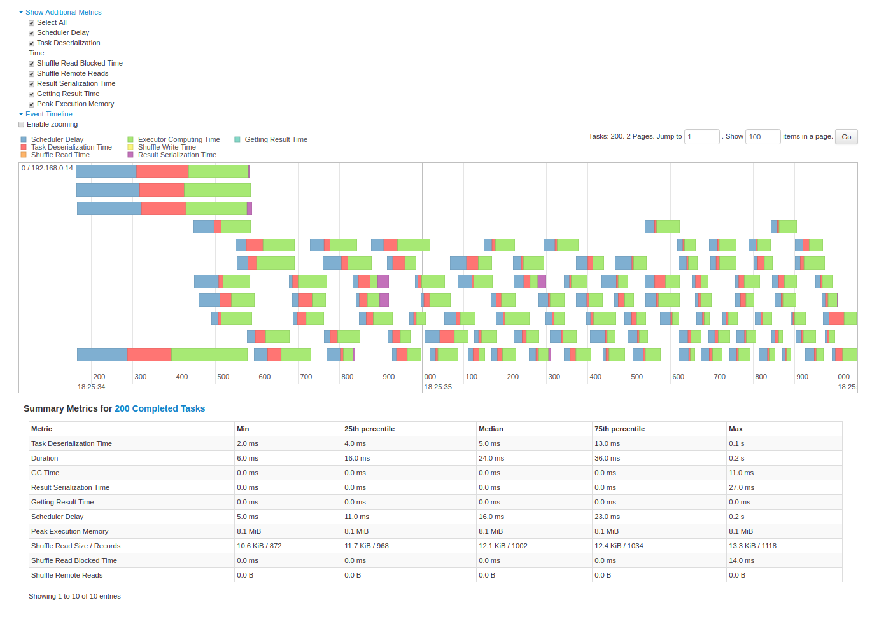
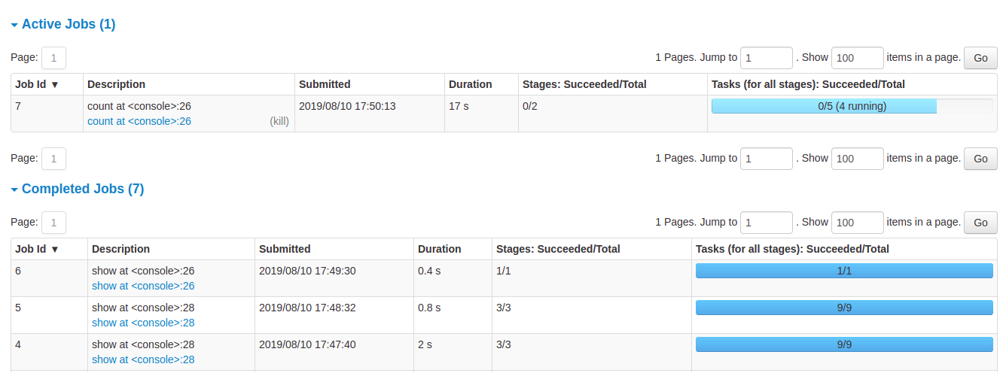

Lecture 7
Spark UDFs and project introduction
Georgetown University
Fall 2025
Agenda and Goals for Today
Lecture
- Spark Diagnostics
- Spark UDFs
- Project
Lab
- Spark on Sagemaker
- Spark DataFrames
- Spark UDFs
Logistics and Review
Deadlines
- ~~Assignment 5: DuckDB & Polars ~~
- ~~Lab 6: Intro to Spark ~~
- Lab 7: Spark DataFrames
- Lab 8: SparkNLP
- Assignment 6: Spark (Multi-part)
- Lab 9: SparkML
- Lab 10: Spark Streaming
- Lab 11: Dask
- Lab 12: Ray
Look back and ahead
- Searching Slack for existing Q&A - like StackOverflow!
- Spark RDDs, Spark DataFrames
- Now: More Spark and Project
- Next week: SparkNLP and more Project
Spark: a Unified Engine
Connected and extensible

Caching and Persistence
By default, RDDs are recomputed every time you run an action on them. This can be expensive (in time) if you need to use a dataset more than once.
Spark allows you to control what is cached in memory.
To tell spark to cache an object in memory, use persist() or cache():
cache():is a shortcut for using default storage level, which is memory onlypersist():can be customized to other ways to persist data (including both memory and/or disk)
Review of PySparkSQL Cheatsheet
https://s3.amazonaws.com/assets.datacamp.com/blog_assets/PySpark_SQL_Cheat_Sheet_Python.pdf
collect CAUTION

Review of htop

htop top section explanation
htop bottom section explanation
Spark Diagnostic UI
Understanding how the cluster is running your job
Spark Application UI shows important facts about you Spark job:
- Event timeline for each stage of your work
- Directed acyclical graph (DAG) of your job
- Spark job history
- Status of Spark executors
- Physical / logical plans for any SQL queries
Tool to confirm you are getting the horizontal scaling that you need!
Adapted from AWS Glue Spark UI docs and Spark UI docs
Spark UI - Event timeline

Spark UI - DAG

Spark UI - Job History

Spark UI - Executors

Spark UI - SQL
Demo of Spark UI Diagnostics in AzureML
PySpark User Defined Functions
UDF Workflow

UDF Code Structure
Clear input - a single row of data with one or more columns used
Function - some work written in python that process the input using python syntax. No PySpark needed!
Clear output - output with a scoped data type
UDF Example
Problem: make a new column with ages for adults-only
+-------+--------------+
|room_id| guests_ages|
+-------+--------------+
| 1| [18, 19, 17]|
| 2| [25, 27, 5]|
| 3|[34, 38, 8, 7]|
+-------+--------------+Adapted from UDFs in Spark
UDF Code Solution
```{python}
from pyspark.sql.functions import udf, col
@udf("array<integer>")
def filter_adults(elements):
return list(filter(lambda x: x >= 18, elements))
# alternatively
from pyspark.sql.types IntegerType, ArrayType
@udf(returnType=ArrayType(IntegerType()))
def filter_adults(elements):
return list(filter(lambda x: x >= 18, elements))
```+-------+----------------+------------+
|room_id| guests_ages | adults_ages|
+-------+----------------+------------+
| 1 | [18, 19, 17] | [18, 19]|
| 2 | [25, 27, 5] | [25, 27]|
| 3 | [34, 38, 8, 7] | [34, 38]|
| 4 |[56, 49, 18, 17]|[56, 49, 18]|
+-------+----------------+------------+Alternative to Spark UDF
Another UDF Example
- Separate function definition form
```{python}
from pyspark.sql.functions import udf
from pyspark.sql.types import LongType
# define the function that can be tested locally
def squared(s):
return s * s
# wrap the function in udf for spark and define the output type
squared_udf = udf(squared, LongType())
# execute the udf
df = spark.table("test")
display(df.select("id", squared_udf("id").alias("id_squared")))
```- Single function definition form
Can also refer to a UDF in SQL
```{sql}
spark.udf.register("squaredWithPython", squared)
select id, squaredWithPython(id) as id_squared from test
```- Consider all the corner cases
- Where could the data be null or an unexpected value
- Leverage python control structure to handle corner cases
UDF Speed Comparison

Costs:
- Serialization/deserialization (think pickle files)
- Data movement between JVM and Python
- Less Spark optimization possible
Other ways to make your Spark jobs faster source:
- Cache/persist your data into memory
- Using Spark DataFrames over Spark RDDs
- Using Spark SQL functions before jumping into UDFs
- Save to serialized data formats like Parquet
Pandas UDF
From PySpark docs - Pandas UDFs are user defined functions that are executed by Spark using Arrow to transfer data and Pandas to work with the data, which allows vectorized operations. A Pandas UDF is defined using the pandas_udf as a decorator or to wrap the function, and no additional configuration is required. A Pandas UDF behaves as a regular PySpark function API in general.
Another example
```{python}
@pandas_udf("first string, last string")
def split_expand(s: pd.Series) -> pd.DataFrame:
return s.str.split(expand=True)
df = spark.createDataFrame([("John Doe",)], ("name",))
df.select(split_expand("name")).show()
+------------------+
|split_expand(name)|
+------------------+
| [John, Doe]|
+------------------+
```Scalar Pandas UDFs
- Vectorizing scalar operations - one plus one
- Pandas UDF needs to have same size input and output series
UDF Form
```{python}
from pyspark.sql.functions import udf
# Use udf to define a row-at-a-time udf
@udf('double')
# Input/output are both a single double value
def plus_one(v):
return v + 1
df.withColumn('v2', plus_one(df.v))
```Pandas UDF Form - faster vectorized form
Grouped Map Pandas UDFs
- Split, apply, combine using Pandas syntax
Comparison of Scalar and Grouped Map Pandas UDFs
Input of the user-defined function:
- Scalar: pandas.Series
- Grouped map: pandas.DataFrame
Output of the user-defined function:
- Scalar: pandas.Series
- Grouped map: pandas.DataFrame
Grouping semantics:
- Scalar: no grouping semantics
- Grouped map: defined by “groupby” clause
Output size:
- Scalar: same as input size
- Grouped map: any size

Project Introduction
Reddit Data!
Reddit BIG data
Data from 2021-01 to 2023-03
Comments 71,786 files (10MB blobs), 749GB, 6,114,480,451 comments (original 7.7TB)
Submissions 26186 files (10MB blobs), 268GB, 892,832,344 submissions (original 3.2TB)
Reddit Background


Comparison of social data infrastructure

Data Dictionary


Timeline
Detailed requirements will be published in the next week
| Deliverable | Deadline |
|---|---|
| Project EDA Milestone | 2023-11-06 11:59pm |
| Project NLP Milestone | 2023-11-20 11:59pm |
| Project Peer Feedback | 2023-11-20 11:59pm |
| Project ML Milestone | 2023-11-30 11:59pm |
| Final Project Milestone | 2023-12-08 11:59pm |
Deliverables
EDA - project plan, initial data exploration, summary graphs and tables, some data transformation
NLP - external dataset merging, more data transformation, leverage an NLP model
Peer feedback - review another group’s projet and provide constructive feedback on their EDA milestone.
ML - build several ML models, compare performance, answer some interesting questions
Final delivery - complete output that takes into account feedback given by instructors and peers for your project, improved analysis and work from intermediate deliverables
Next Steps
- Form into groups of 3-4 students. Register on Canvas by 10/10
- Discuss potential interesting questions with your group
- Consider what type of split to the data you will want, do you want to look at a specific subreddit, time period, etc.
- Think about potential external data to merge with your Reddit data
- More to come next week!